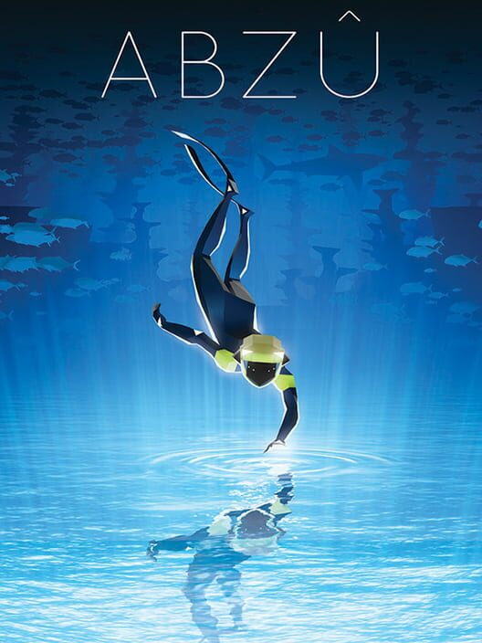
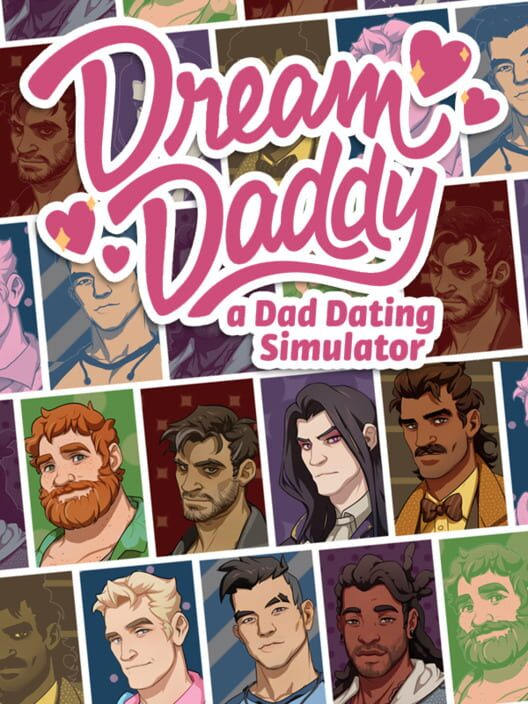
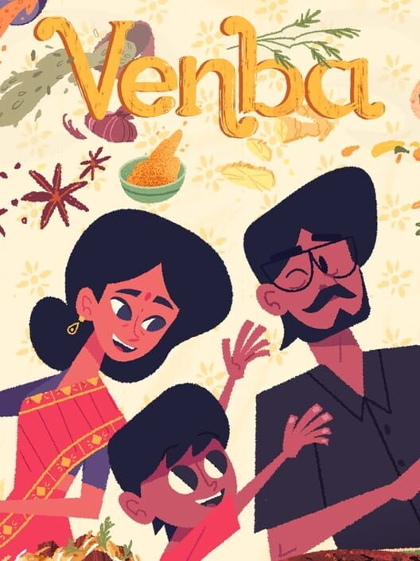
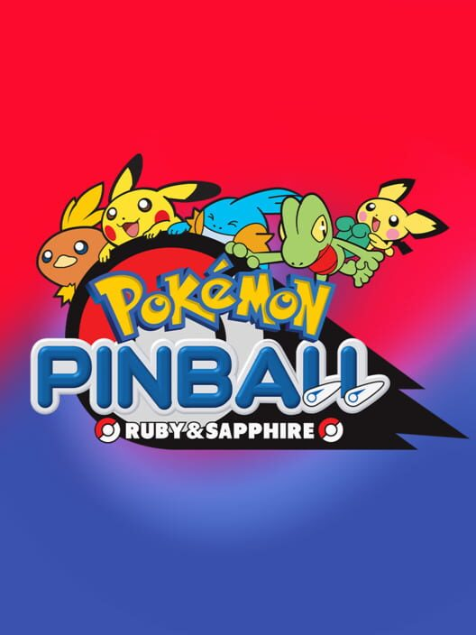
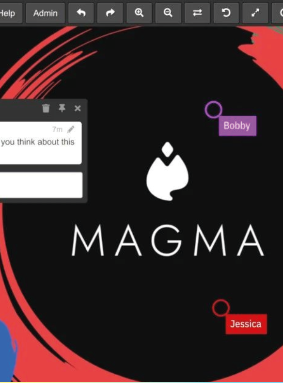
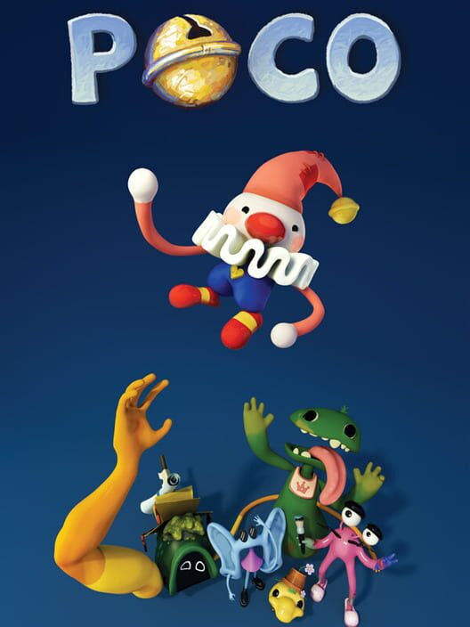
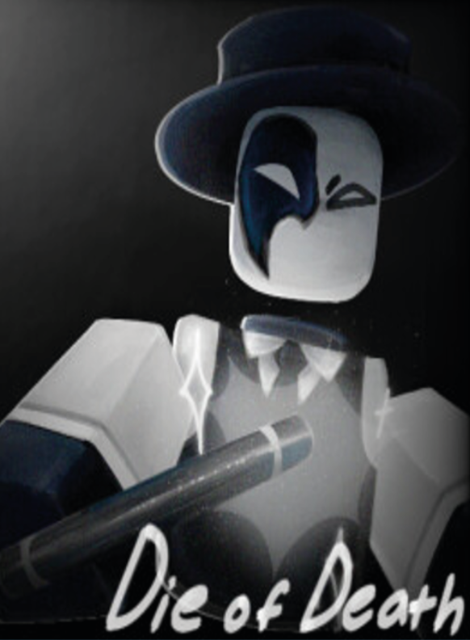
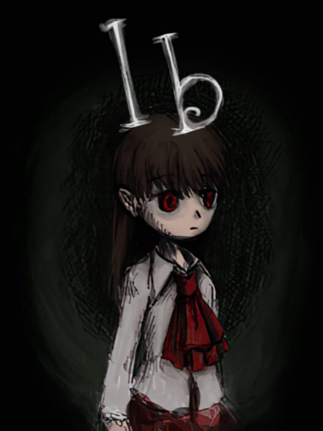

Recomendaciones

Noelia recomienda...

Phoenix Wright: Ace Attorney
Juego con preferencia
PC/Nintendo DS
20 horas

Katamari Damacy
Juego corto
PC
6 horas

Coffe Talk
Juego accesible
PC
9 horas
Jacobo recomienda...

Heavenly Bodies
Juego con preferencia
PC
4 horas

Voices of the Void
Juego corto
PC
??? horas

Abzu
Juego accesible
PC
2 horas
Claudio recomienda...

Dream Daddy
Juego con preferencia
PC
10 horas
Metal Gear Solid 1
Juego corto
PS1, PC
11 horas

Venba
Juego accesible
PC
1 hora
Dani Furry recomienda...

To be added
Juego con preferencia
El invitado aún debe decidir
To be added
Juego corto
El invitado aún debe decidir

Pokémon Pinball Rubí y Zafiro
Juego accesible
Game Boy Color
9 horas
Sunny recomienda...

Master Detective Archives Raincode
Juego con preferencia
PC
31 horas

A Short Hike
Juego corto
PC
2 horas

Grimm's Hollow
Juego accesible
PC
2 horas
Dani Spooky recomienda...

Magma
Juego con preferencia
Navegador
Draw Together!

Poco
Juego corto
PC
1 hora

Die of Death
Juego accesible
PC
Roblox
Aike recomienda...

In Stars and Time
Juego con preferencia
PC
24 horas

Ib
Juego corto
PC
4 horas

Pocket Mirror
Juego accesible
PC
8 horas